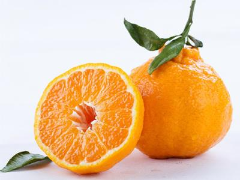
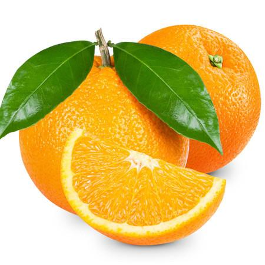
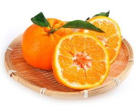
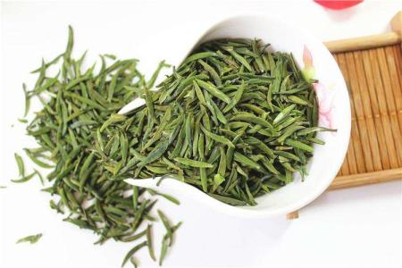
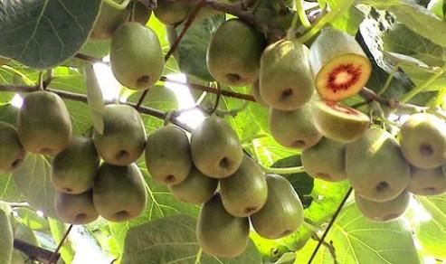
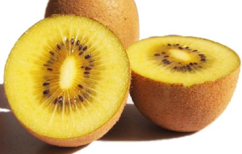

不知火
 不知火杂柑又名“不知火”“凸顶柑”“丑柑”，“丑桔”，“丑八怪”等叫法。是由日本农水省园艺试验场于1972年以清见与中野3号椪柑杂交育成。不知火柑果实呈倒卵形，果皮黄橙色，果面粗糙，易剥皮。它花果同株，两代同堂，一年而生。3、4月开始开花，10月上旬开始着色，12月上旬完全着色，到3、4月又同时结果，味极甜，糖度可达14-18度，但最吸引人的地方在于不仅味道清甜，而且果肉清脆,咬在嘴里清脆化渣，风味极好。
单性结果强。单果重200-280g,是宽皮柑桔中的大果形。果形倒卵形或扁球形，果形指数1.00-2.00。果形和果实大小都不整的，果梗部似三宝柑，有突起短颈，也有完全无短颈的，无颈的扁平果顶多有脐。果皮黄橙色，10月中旬开始着色，12月上旬完全着色。果皮厚3.5-5mm。成熟果果皮略粗。易剥皮，有碰柑香味，无浮皮。果肉橙色，肉质柔软多汁，囊壁极薄而软。果汁糖度13-14度。不同的栽培地，也有高达16度的。成熟时酸为1%左右。成熟期2-3月。风味极好，品质优。
青见
 青见柑橘系日本园艺试验场1949年以特罗维塔甜橙（华脐的实生变种）与温州蜜柑杂交育成。1979年登记注册。主要性状：树势强，叶片狭长、枝条披垂；果实扁圆形，果大，一般重200克左右；果面光滑、橙色，富光泽；果皮薄，包着较紧，但仍易剥皮品种。
树势强，叶片狭长、枝条披垂；果实扁圆形，果大，一般重200克左右；果面光滑、橙色，富光泽；果皮薄，包着较紧，但仍易剥离；肉色橙红，肉质细嫩，汁多化渣，果汁糖度11°~12°左右，含酸量3月份为1%左右，酸甜爽口，香气宜人，品质优，四周无授粉树时则为无核。4月底或5月初开花，12月初上色，12月底~1月上旬8成熟，可留树至2~3月采收，上市期为1~4月，为很有市场价值的晚熟易剥皮品种。
栽培要点及适应性：青见为雄性不育品种，无花粉，单性结实，如能适当配授粉树，可提高产量。青见大小年结果明显，应注意大年疏果，小年重剪，以调节其结果量。因成熟期晚，应选择冬季气温较高，无严重霜雪冻害的地区种植，果皮脆弱，易受风害。一般以枳作砧木，栽植密度为每公顷500~833株。因其枝条软而下垂，结果以内膛为主，因此修剪应多短截，适当疏删外围枝，使枝条直立或斜伸，减少郁闭。评价：清见是极为优良的杂交品种，加之成熟期和耐贮性好，很有发展前途。将成为杂交柑在生产中的主推品种。产量水平：丰产性中等。适应推广地区：中亚热带和南亚热带柑桔区。
米花糖

米花糖是一种著名的传统小吃，香甜可口，具有米花清香。其中以重庆江津米花糖和四川乐山苏稽米花糖最知名。米花糖主要是用糯米和白糖作的。先要经过米制过程，就是将糯米蒸熟，晾干使它仍成原米粒状，然后每5公斤糯米以200克饴糖兑成水，在锅内焙制，俟水干后，再用砂炒，这时1粒米可涨到4粒米大（用猪油或菜油炸有同样效果，为了节约油脂，一般多用砂炒），然后再用糖精、白糖和饴糖制成糖浆，将制好的米倒入糖浆内，加上少许的花生仁，在锅内拌匀后，倒于案上匣内，捏成方块，再用刀切成小块，即成产品。
蒲江米花糖是川西平原广大群众所喜爱的一种食品，是蒲江县的名特产品，民间俗称“谷花”，传在清代咸丰年间即有制作，距今有200多年的历史。蒲江亦被人们誉为“中国米花糖之乡”。蒲江米花糖采取猪油和菜油混合炸米花泡子。这样不但使米花糖具有猪油的香洁，更有菜油的清香，米花糖还呈发亮的嫩白色，在生产工艺和产品的风味上独树一帜。蒲江米花糖，以其色泽洁白、香甜酥脆、爽口化渣、食后有稻谷清香余味等特点，深受人民大众喜爱，是旅游、休闲、馈赠亲朋好友的理想食品。由于色、香、味俱佳，蒲江米花糖被四川省商业局评定为1979年度优质产品。
耙耙桉
 耙耙柑，又叫春见，全称春见橘橙，即兴津44号，于1979年由日本国静冈县果树试验场以享有“柑橘皇后”之美誉的清见桔橙和F-2432椪柑杂交育成的最新品种。耙耙柑于1996年进行品种登记，因高糖、优质、果大、丰产而被推广，2001年从中国柑橘研究所引进，广泛种植于四川彭山县、蒲江县、丹棱县、仁寿县、金堂县，江西，湖南，福建等地，其中四川蒲江及丹棱出产的品质最佳。耙耙柑萌芽期3月上旬，现蕾期3月下旬，盛花期4月中旬，11中下旬完全着色，果实成熟期12月中旬，果实生育期270天左右。果实高扁圆形或倒阔卵形，果面较光滑，深橙色，富光泽，果皮薄，包着紧，但易剥皮。果肉深橙色，质地脆嫩多汁，极化渣，酸甜适口。耙耙柑与丑橘不知火杂柑相比，耙耙柑的果面较光滑，味道更好。
耙耙柑果肉可溶性固形物14.5%，可食率76.64%，富含人体所需的维C、铁、钙、磷、柠檬酸、胡萝卜素等微量元素，维生素C每100克含30.5毫克，含热量、碳水化合物、脂肪、蛋白质、纤维素、营养价值比同类水果高出很多。有生津止渴，化痰理气，具有高营养值，高药用价值。
红枣

红枣，又名大枣，属于被子植物门、双子叶植物纲、鼠李目、鼠李科、枣属的植物。其维生素含量非常高，有“天然维生素丸”的美誉，具有滋阴补阳，补血之功效。
红枣为温带作物，适应性强，种植范围广泛。红枣素有“铁杆庄稼”之称，具有耐旱、耐涝的特性，是发展节水型林果业的首选良种。
据史料记载，红枣是原产中国的传统名优特产树种。经考古学家 从新郑斐李岗文化遗址中发现枣核化石，证明枣在中国已有8000多年历史。早在西周时期人们就开始利用红枣发酵酿造红枣酒，作为上乘贡品，宴请宾朋。红枣的营养保健作用，在远古时期就被人们发现并利用。《诗经》已有“八月剥枣”的记载了。《礼记》上有“枣栗饴蜜以甘之”，并用于菜肴制作。《战国策》有“北有枣栗之利……足食于民”，指出枣在中国北方的重要作用。《韩非子》还记载了秦国饥荒时用枣栗救民的事。所以民间一直视枣为“铁杆庄稼”“木本粮食”之一。枣作为药用也很早，《神农本草经》即已收载，历代药籍均有记载，对其养生疗病的认识不断深化。至 今，枣都被视为重要滋补品，李时珍在《本草纲目》 [1] 中说：枣味甘、性温，能补中益气、养血生津，用于治疗“脾虚弱、食少便溏、气血亏虚”等疾病。常食大枣可治疗身体虚弱、神经衰弱、脾胃不和、消化不良、劳伤咳嗽、贫血消瘦，养肝防癌功能尤为突出，有“日食三颗枣，百岁不显老”之说。
绿茶
 绿茶（Green Tea），是中国的主要茶类之一，是指采取茶树的新叶或芽，未经发酵，经杀青、整形、烘干等工艺而制作的饮品。其制成品的色泽和冲泡后的茶汤较多的保存了鲜茶叶的绿色格调。常饮绿茶能防癌，降脂和减肥，对吸烟者也可减轻其受到的尼古丁伤害。
蒲江雀舌，四川省蒲江县特产茶叶，中国地理标志产品。蒲江县位于四川盆地西南部、成都平原西南缘这一重要的茶叶生产带，自然条件优越，种茶、加工茶历史悠久，所产茶采用茶树嫩茶加工，其新发的嫩芽形状如鸟雀的舌头，很细小，称为雀舌。这种雀舌茶叶因其“色翠、香高、味醇、形美”，品质上乘，香高味爽。曾连续三届获得“中茶杯”一等奖，入选“全国农产品区域公用品牌价值百强”。
蒲江县独特温暖气候使蒲江雀舌成为“早市名茶”。蒲江气候特征为：常年气候温和（年均气温16.4℃，10℃以上年积温5119℃，无霜期302天），日照少（≤1122小时），雨量充沛（年降水1280毫米），浅丘山（海拔550—630米），早春有效积温高。这种独特的自然环境成就了蒲江为全中国闻名的商品性“早市名茶”最适产区，同时也奠定了“蒲江雀舌”的品质特色及商品优势，“蒲江雀舌”茶分别比“蒙顶名茶”、“龙井”和“碧螺春”早上市10—15天和20—35天。
红阳
 红心猕猴桃，是一种可食用与药用为一体的水果，每百克鲜果肉含维生素C100-420毫克，比柑橘高5-10倍，比柠檬高11-13倍，比苹果高20-80倍。红心猕猴桃果肉细嫩、香气浓郁、口感香甜清爽、酸度极低，营养丰富，看之饱眼福、食之饱口福。富含维生素C及P、K、Ca、Mg、Fe、Cu等多种矿物质和18种氨基酸，特别是微量元素中的含钙量为果中之首，被誉为“人间仙果”、被称为“果中之王”、“维C之王”，特别是微量元素中的含钙量较高，果实中的钙可直接被人体吸收，是中老年人良好的补钙剂，营养价值丰富。红心猕猴桃是新品种，属中华猕猴桃中的红肉猕猴桃变种，是特早熟红心品种，其子代遗传性状稳定，抗逆性强，果实较大，风味浓甜可口，较耐贮藏。
蒲江县年平均气温16.3℃，平坝、丘陵、山地随地势升高，夏季逐渐缩短，冬季逐渐增长；“两河”下游的寿安地区为夏季最长地区，长秋山区为冬季最长地区。县境属暖水区，“两河”平坝区水温平均比气温高2.0℃；耕作层5～20厘米处，年平均地温在17.9～18.2℃之间，高于年平均气温1.6～1.9℃。县境内日照时数，春夏足而秋冬短；降雪少，年平均降雨量1196.8毫米；年平均相对湿度为85%，除5月份最低为79%外，其余月份均在80%以上；风向以东北风、西南风为主。
猕猴桃
 猕猴桃 （Actinidia ssp．）为猕猴桃科（Actinidiaceae）猕猴桃属（Actinidia Lindl）藤本植物，全世界猕猴桃属植物共有 66 个种，中国有62个种 [1] 。"蒲江猕猴桃”获地理标志商标,这是最蒲江的标志。四川省成都市蒲江县位于北纬30度，是世界公认的猕猴桃最佳种植区，生态条件优越，品种资源丰富，市场基础良好。
蒲江县位于成都平原西南缘，介于东经103度19分～103度41分、北纬30度5分～30度21分之间。东西最长37公里，南北最宽27.5公里，总面积582.86平方公里。2005年，全县人口25.75万人，耕地22.37万亩。
猕猴桃具有很高的营养价值，维生素 C 含量高，被誉为“水果之王”，经济价值极高。 [3] 2010年10月27日，国际猕猴桃高峰论坛在成都市蒲江县举行。开幕式上，“蒲江猕猴桃”正式获得国家地理标志保护产品认定。蒲江县是全球三大黄肉型猕猴桃种植地之一，蒲江县气候温和、雨量充沛、土壤肥沃，是公认的猕猴桃种植最佳适宜区，是国家级猕猴桃标准化示范区、出口猕猴桃质量安全示范区，是全球三大黄肉型猕猴桃种植地之一，是世界少有的红、黄、绿“三色齐聚”的猕猴桃产地。2010年“蒲江猕猴桃”凭借果形美观、香气浓郁、酸甜爽口、风味独特、营养丰富的特质被认定为国家地理标志保护产品，2011年成功注册地理标志证明商标。